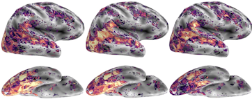
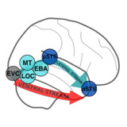

|
Kathy Garcia I am currently a 2nd year Ph.D. student studying Computational Cognitive Science at Johns Hopkins University as a graduate researcher in the Computational Cognitive Neuroscience Lab, advised by Professor Leyla Isik. |
ResearchI'm interested in human vision, deep neural networks (DNNs), and dynamic social perception. My research aims to find biologically plausible computational models for dynamic and social visual perception. Therefore, most of my work thus far has been on large-scale benchmarking of DNNs for dynamic social perception, focusing on the recently proposed "lateral" visual stream. |
|  |
Modeling Dynamic Social Vision Highlights Gaps Between Deep Learning and Humans
We present a dataset of natural videos and captions involving complex multi-agent interactions, and we benchmark 350+ image, video, and language models on behavioral and neural responses to the videos. Together these results identify a major gap in AI's ability to match the human brain and behavior and highlight the importance of studying vision in dynamic, natural contexts. |
|  |
Large-scale Deep Neural Network Benchmarking in Dynamic Social Vision
Kathy Garcia, Colin Conwell, Emalie McMahon, Michael F. Bonner, Leyla Isik VSS, 2024 (Talk presentation) Large-scale benchmarking of 300+ DNNs with diverse architectures, objectives, and training sets, against fMRI responses to a curated dataset of 200 naturalistic social videos, with a focus on the "lateral" visual stream. |

|
Predicting Dimensional Symptoms of Psychopathology from Task-Based fMRI using Support Vector Regression
Kathy Garcia,
Zach Anderson,
Iris Ka-Yi Chat,
Katherine S.F. Damme,
Katherine Young,
Susan Y. Bookheimer,
Richard Zinbarg,
Michelle Craske,
Robin Nusslock
This study develops a novel machine learning approach using Support Vector Regression (SVR) to explore potential biomarkers in fMRI data for symptoms of anxiety and depression, finding that MID task-fMRI data does not accurately predict these symptoms, with results indicating a poor model fit. |
Miscellaneous |
|

|
Teaching Assistant, Cognitive Neuropsychology of Visual Perception - Spring 2024 Teaching Assistant, Neuroimaging Methods in High-Level Vision - Fall 2023 Teaching Assistant, Computational Cognitive Neuroscience of Vision - Spring 2023 |